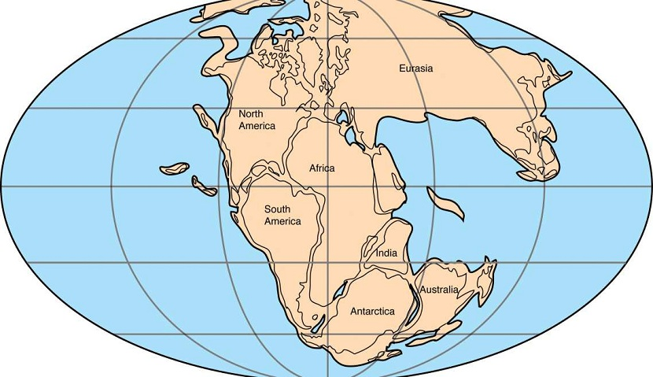
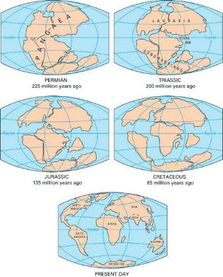

Alfred Wegener desarrolló la hipótesis de la
deriva
continental.
Según esta hipótesis los continentes se desplazaban sobre el
fondo oceánico.
Para ello se basó en:
- La coincidencia en las formas de las costas de África y Sudamérica.
- La coincidencia en los tipos de rocas y estructuras entre África y
Sudamérica.
- La existencia de glaciaciones de hace 250 m.a. en lugares muy
distantes.
- La existencia de una fauna y flora fósil terrestre coincidente en
lugares ahora separados por océanos.

La teoría consistió en lo siguiente:
Hace unos 235 m.a. todos los continentes estaban unidos en una
sola masa continental (PANGEA). Ese supercontinente se habría fragmentado
posteriormente en dos:
LAURASIA (al norte) y
GONDWANA (al sur). Con el tiempo,
ambos se habrían dividido en los continentes actuales que se habrían
desplazando hasta situarse en las posiciones que hoy ocupan.
Las pruebas que aportó Wegener que apoyaron su teoría de la deriva
continental fueron tanto geográficas, geológicas,paleoclimáticas como
paleontológicas.

Dinos qué te ha parecido nuestro sitio web. También puedes sugerirnos
cambios o errores para que en un futuro los corrijamos.
NOTA: El formulario es una prueba, sus datos no
serán enviados a ningún archivo externo.